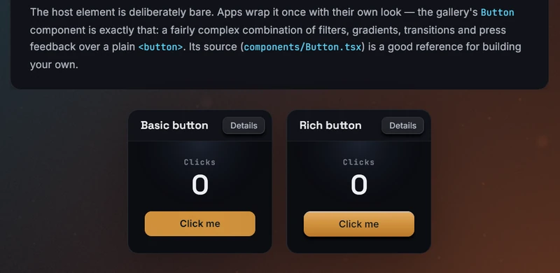

Custom styles
An app can register its own style properties in Rust. A registered property
works like a built-in one: it is typed into BevyStyle, accepted in style
and in the hover, press and focus variants, merged per property on updates,
and listed in the devtools style editor. The core's own properties are
declared through the same API.
Usage
Declare the property as a static, register it, and read its value as a
component from your own systems:
TSX
<button
style={{ sparkle: { rate: 8 } }}
pressStyle={{ sparkle: { rate: 70, size: 7 } }}
>
<text>Make a wish</text>
</button>Rust
use bevy::prelude::*;
use bevy::ui::{ComputedNode, UiGlobalTransform};
use bevy_react::style::{StyleProperty, StyleValue};
use bevy_react::{ReactAppExt, ReactApplySet};
#[derive(Debug, Clone, PartialEq, serde::Deserialize, ts_rs::TS)]
pub struct Sparkle {
/// Particles per second.
pub rate: f32,
/// Particle size in logical px (default `6`).
#[ts(optional)]
pub size: Option<f32>,
}
pub static SPARKLE: StyleProperty<Sparkle> = StyleProperty::new("sparkle");
pub struct SparklePlugin;
impl Plugin for SparklePlugin {
fn build(&self, app: &mut App) {
register_bindings(app);
app.add_systems(Update, emit_sparkles.after(ReactApplySet));
}
}
/// Also called from the `--export-bindings` path.
pub fn register_bindings(app: &mut App) {
app.add_react_style(&SPARKLE);
}
// No writer reads `sparkle`, so its value is stamped on the node.
fn emit_sparkles(
emitters: Query<(
&StyleValue<Sparkle>,
&ComputedNode,
&UiGlobalTransform,
)>,
) {
for (sparkle, node, global) in &emitters {
// spawn `sparkle.0.rate` particles per second in the node's box
}
}Then regenerate bevy.ts (see Typing) so sparkle type-checks.
The complete property, particles included, is
examples/demos/sparkle.
The light along the edge of every card in the demos app is a custom style
too: spotlight is stamped the same way, and a system copies it into a
UiMaterial together with the pointer position, so the light follows the
cursor without a single React render
(examples/demos/spotlight.rs).

Declaring a property
A property is a static StyleProperty<T>. The static is the declaration and
also the typed key: style.get(&SPARKLE) reads the merged value in a
writer. Declare it static, never const: properties are identified by
address.
StyleProperty::new(name)decodes throughT's serdeDeserializeand types the field asT's ts-rs type.Tderives both (serdeandts-rs10, the version bevy-react uses) and isClone + PartialEq + Debug. Doc comments on its fields carry over to the generated TypeScript.- Every field of the struct is public, so a declaration overrides the
defaults with struct-update syntax:
StyleProperty { invalidate: …, ..StyleProperty::new("x") }. - A name already registered, a core property's included, panics at startup. So does registering the same static twice.
- The value is static: a custom property accepts no
{ animated }binding and has notransitionchannel. Ease or animate in your own system if you need it.
Codecs
The codec decides how the wire value decodes and how TypeScript types it.
StyleProperty::with_codec(name, codec) (and Attribute::with_codec for
element attributes) takes one of:
| Codec | Decodes with | TypeScript type |
|---|---|---|
Codec::serde() |
T's Deserialize (what new uses) |
T's ts-rs type |
Codec::serde_as(ts) |
T's Deserialize |
The literal expression ts |
Codec::custom(decode, ts) |
Your DecodeFn<T> over an erased_serde deserializer |
The literal expression ts |
Codec::keyword(&TABLE) |
A KeywordTable<T>: fixed keywords to values |
The union of the keywords |
A value that fails to deserialize fails the whole commit: the React commit
throws a TypeError and Bevy never receives its ops. The generated types
are the guard. A lenient custom decoder reports the bad value instead (with
bevy_react::protocol::decode_warn, which shows it in devtools) and returns
Ok(None), which reads as the property being unset. A literal TS type is
written into bevy.ts as is, so prefer a ts-rs type for an app property.
Stamped values
A property that no writer reads is stamped: its value lands on the node
as a StyleValue<T> component, for your systems to query:
- It is present exactly while the merged style sets the property, hover,
press and focus variants included, and removed when nothing sets it. Query
Without<StyleValue<T>>(or useRemovedComponents) to notice the end. - It is updated only on a real change, so
Changed<StyleValue<T>>is reliable. - Order your systems
.after(ReactApplySet)to see this frame's values. - Two stamped properties can't share a value type, since both would be the
same component. Registering them panics at startup; give one a newtype
(the demo's
sparkleBurstisstruct SparkleBurst(f32)). - Stamped values exist on elements with a box. A nested
<text>span ignores them.
Writers
When the property should become a component of your own shape, register a
global Writer that reads it. The property is then no longer stamped:
use bevy_react::style::{StyleProperty, Writer, owns};
#[derive(Component, PartialEq)]
struct Wobble(f32);
static WOBBLE: StyleProperty<f32> = StyleProperty::new("wobble");
static WOBBLE_WRITER: Writer = Writer {
reads: &[&WOBBLE],
attrs: &[],
writes: &[owns::<Wobble>],
apply: |_ctx, style, ec| match style.get(&WOBBLE) {
Some(&amount) => {
ec.insert(Wobble(amount));
}
None => {
ec.remove::<Wobble>();
}
},
};
app.add_react_style(&WOBBLE)
.add_react_style_writer(&WOBBLE_WRITER);- A writer re-runs only when a property it reads changes, on any styled
element, including on hover, press and focus changes. On a freshly
spawned node (
ctx.fresh) it runs only if the style sets one of its properties. applygets the full merged style, never a delta: an absent property means remove or reset.- Each component has one writer. Claiming a component another writer
writes, a core one such as
BackgroundColorincluded, panics at registration. A global writer can't read element attributes; that is an element writer. - Global writers run in registration order.
WriterCtxalso tells the writer the elementkind, itsflags, whether the node is apromotedlayer root, and gives access to theassetsserver.
Variants
A property in hoverStyle, pressStyle or focusStyle replaces the base
value while that state is active. The replacement is whole: a variant that
sets sparkle: { rate: 70 } drops every other field of the base sparkle.
Keep values that must survive a state change in a separate property; the
demo's click-burst key is its own sparkleBurst property for exactly this
reason, since it would vanish under pressStyle right when a click lands.
Composited layers
Inside a cached composited layer, a node's repaint is not detected from component changes. Declare what a change to the property invalidates:
use bevy_react::style::{Invalidate, Invalidation};
static WOBBLE: StyleProperty<f32> = StyleProperty {
invalidate: Invalidate::Fixed(Invalidation::PAINT),
..StyleProperty::new("wobble")
};Invalidation::PAINT makes any enclosing cached layer re-capture when the
value changes. Invalidate::Computed(fn(old, new, &NodeCtx)) decides per
change. Pixels your systems change later on their own (an animation driven by
the value) need their own signal: push the entity into
bevy_react::layer::LayerContentDirt (its nodes list) on the frames it
repaints.
Typing
The TypeScript exporter adds every app property to BevyStyle through a
declare module "bevy-react" augmentation in your bevy.ts, together with
the ts-rs declarations of the value types. Register the property on both
paths: in the running app and in the --export-bindings exporter. A shared
register_bindings(app) function called from both keeps them in step. Then
regenerate bevy.ts. See TypeScript codegen.
A style key no plugin registered is dropped with an unknownStyleField
warning; the rest of the style still applies.
Limits
- No
{ animated }bindings and notransitioneasing for custom properties. - At most 256 style properties per app, 74 of them the core's, and at most 64 global writers, 29 of them the core's.
- A malformed value decoded with plain serde loses the whole commit.
- A stamped property's value type must be unique among stamped properties.
See the style property reference for the core properties, which are declared the same way.